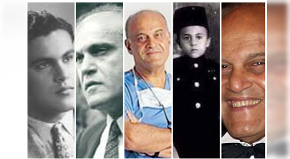
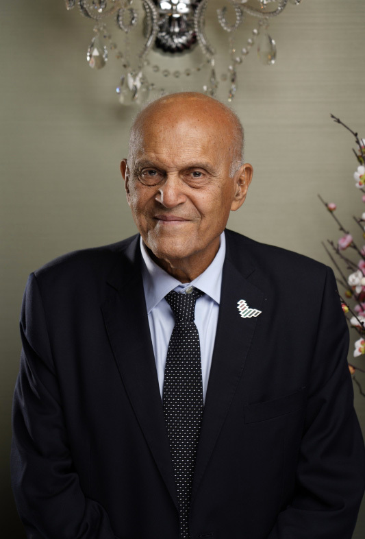
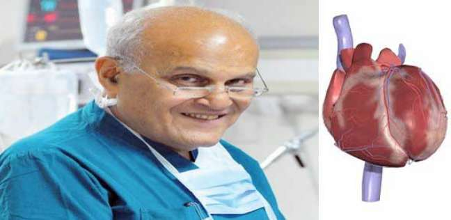
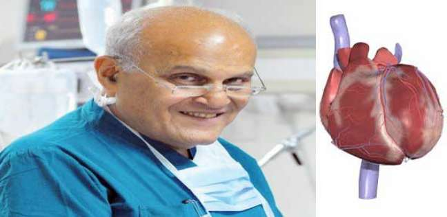

Dr:Magdi Yacoub

Biography:Sir Magdi Yacoub is an Egyption cardiothracic surgeon , one of the world's most resppected cardiac
when he was 5 years old ,he said "I want to be a surgeon" because his father was a surgeon and his aunt died
at 20 years old beacause she was sick from her heart.
Doctor magdi yacoub said:"many people need treatment for this problem;I will be a heart surgeon to help people"
Data of birth:16/November/1935
Place of birth: sharqia,the city of Belbies,Egypt.
University : factuly of medicin cairo university

He was able to achieve his dream already and studied medicine at Cairo University
and qualified as a doctor in 1957.
Sir Magdi Yacoub is currently professor of cardiothoracic surgery
at the National Heart & Lung Institute. Imperial College London.
He achieved a lot of achievements and has won many awards and titles
For example: Yacoub established the largest heart and lung transplantation program
in the world wheremore than 2500 transplant operations have been performed.
He has also developed novel operations for a number of complex congenital heart
In 1964, he was appointed rotating surgical senior registrar to the National Heart and Chest Hospitals, where he worked with cardiothoracic surgeon Donald Ross. Here, they worked on repairing heart valves in people with severe valvular heart disease and heart failure.Four of their cases, operated on between December 1965 and October 1967, were reported on in the British Medical Journal (1968) in an article titled "Too ill for cardiac surgery?". Three had severe aortic valve disease and one had rheumatic heart disease with multiple affected valves. All four had a poor prognosis with death expected within a few days and all four survived surgery. He carried out a number of Ross procedures, where the diseased aortic valve is replaced with the person's own pulmonary valve, particularly in growing children. It became a popular alternative to the surgical treatment of aortic valve disease in young adults and avoided the need for anticoagulation and repeated operations. Yacoub modified the operation by planning remodelling of the autograft root, the Ross-Yacoub procedure, performed in carefully selected people.At a time when cardiologists may have been reluctant to refer for surgery, Yacoub's search for operable people earned him the name "Magdi's midnight stars". Later, his application for a job at the Royal Brompton Hospital was turned down.In 1968, he moved to the United States and the following year he became Instructor and then Assistant Professor at the University of Chicago
 


for more information about the biography of Dr:Magdi Yacoub
click heremore information
- Annual of cardiac surgery
- coronary Artery surgery:imaging and echocardi
- Annual of cardiac surgery
Author's books
- 1990
- 1993
- 1993
In 1973, Dr magdi yacoub returned to England and became a consultant cardiothoracic surgeon at Harefield Hospital,West London,
a previous sanatorium built during the First World War consisting of numerous small houses with interconnected corridors.
He later recalled that "I was tempted to stay in Chicago, as I was interested in the research they were doing there, but I had already accepted the position at Harefield before going to the US
so I was honour bound to return". At Harefield, he worked closely with Rosemary Radley-Smith, consultant in paediatric cardiology.
As a visiting professor to the University of Nigeria, Nsukka, Yacoub, Fabian Udekwu, C. H Anyanwu, and others formed part of the team that performed the first open heart surgery in Nigeria in 1974.[19]some tv interviews of Dr.Magdi yacoub